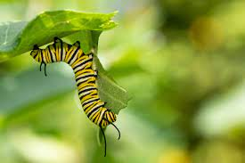
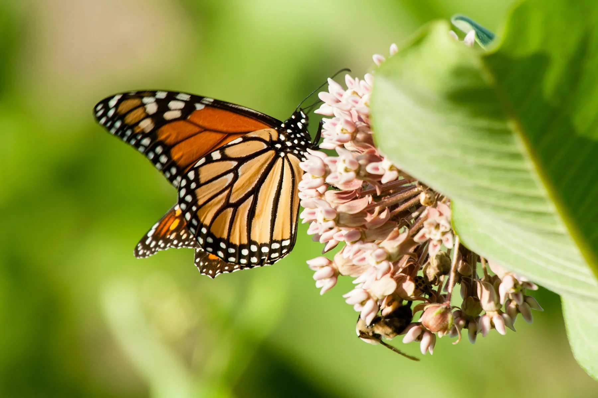

The butterfly life cycle begins with a tiny egg, usually laid on the underside of a leaf.Each egg contains a developing larva, known as a caterpillar, waiting to emerge.The shape, color, and size of the eggs vary depending on the butterfly species.These eggs are often well-camouflaged to protect them from predators.

Caterpillar
When the egg hatches, a caterpillar emerges and begins feeding immediately on the host plant. Its primary goal at this stage is to grow quickly, shedding its skin multiple times. Caterpillars can have striking patterns or colors that serve as warnings to predators. This stage lasts from a few days to several weeks, depending on the species and environment.
Chrysalis
After the caterpillar has grown enough, it forms a chrysalis, or pupa, where transformation begins. Inside the chrysalis, the caterpillar’s body breaks down and reorganizes into an adult butterfly. The chrysalis stage can last from days to weeks, depending on species and climate conditions. During this stage, the pupa is often camouflaged to blend in with its surroundings and avoid predators.

Butterfly
The fully formed adult butterfly emerges from the chrysalis, spreading its wings to dry before flying. Adult butterflies feed on nectar from flowers, helping pollinate plants in the process. Their bright colors and patterns can serve to attract mates or warn predators.The adult butterfly’s main goal is reproduction, continuing the cycle by laying eggs.